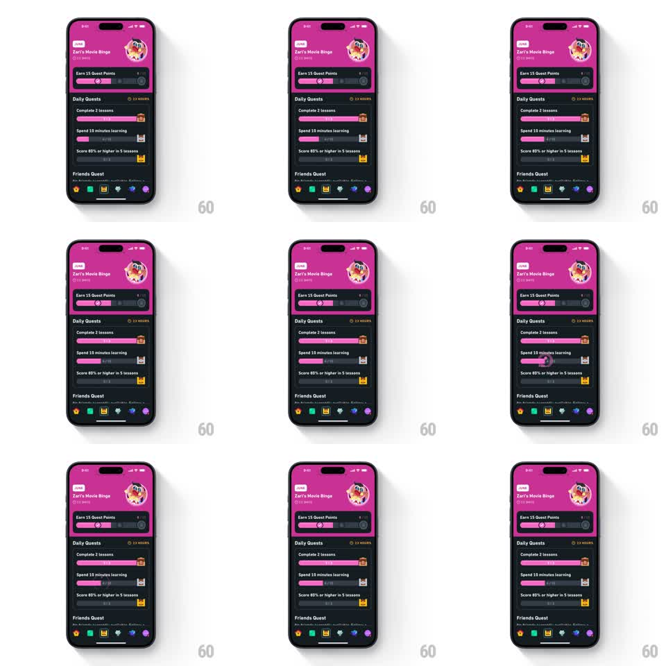

Media
Frame-by-frame

Rebuild this animation 1:1: Duolingo's daily-quest idle screen - on the dark quests tab, the completed quest's chest bounces in place while its full progress bar runs a shimmering highlight sweep, with the pink friends-quest card and tab bar static around it.

Rebuild this animation 1:1: Duolingo's daily-quest idle screen - on the dark quests tab, the completed quest's chest bounces in place while its full progress bar runs a shimmering highlight sweep, with the pink friends-quest card and tab bar static around it.
## Integration
Integration: stack-agnostic spec - springs given as stiffness/damping, timed motions as duration + curve; map every value to your framework and animation library of choice.
## Scene
Dark charcoal quests screen. Top: a pink friends-quest card ("Zari's Movie Binge", timer, circular badge) with its own "Earn 15 Quest Points" progress bar. Below: "Daily Quests" list - three rows (Complete 2 lessons, Spend 10 minutes learning, Score 80% or higher in 5 lessons), each with a purple progress bar and a reward chest icon at its end; the first row is complete. Bottom: the standard 6-icon tab bar. "Friends Quest" section header peeks at the bottom.
## Motion spec
Pattern: idle reward-ready loop on a completed quest.
- The completed quest's chest bounces in place (translateY 0 -> -6pt -> 0, spring ~350/18, repeating every 1.4s).
- Its full progress bar runs a shimmer: a diagonal light band sweeps left to right across the fill (600ms, ease-in-out, repeating every 2s).
- The chest lid wiggles on each bounce (rotate -5deg -> 5deg -> 0, 300ms).
- The in-progress rows' bars also shimmer, at lower intensity and offset phase (400ms behind).
- Everything else - header card, timers, tab bar - is static.
## Calibration
- This is an idle loop, not a sequence: no start trigger, no end state; timing must tile seamlessly.
- The completed row's chest is the focal point; the other rows' shimmer is ambient and dimmer.
## Reduced motion
Static full bars and chest, no bounce or shimmer.
## Don't miss
- The shimmer moves across the fill only, never the empty track.
- The chest bounce and lid wiggle are one combined motion, not two loops.